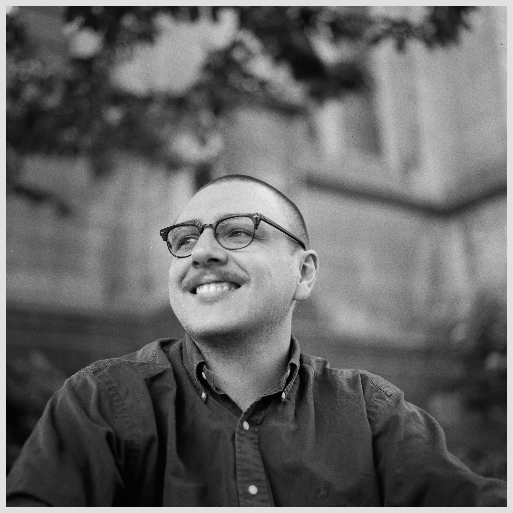

About
I'm a chilean biochemist-turned-computational biologist currently pursuing my PhD at the Université de Lille, focusing on reconstructing a evolutionary Tree-of-Life using unconventional computational paradigms for biological system representation.
My current research interest center around:
- Computational & mathematical representations of biological systems
- Biological networks and its relationship to biological complexity
- Personal knowledge management (PKMs) and personal development environments (PDEs) for scientific (research) software development
My complete CV can be found here.
